Je suis l'explorateur Gabriel Marie ! J'explore en solitaire les territoires intérieurs de la Côte-Nord à la recherche de cratères de météorites. Mais, étonnamment, je trouve plus de reliques autochtones que de cratères, ce qui n'est malheureusement pas mon objectif.
J'ai toutes les photos de mes expéditions sur mon site internet Flickr, classées par expédition.
Expédition Lac Nipisso Nord — Été 2025
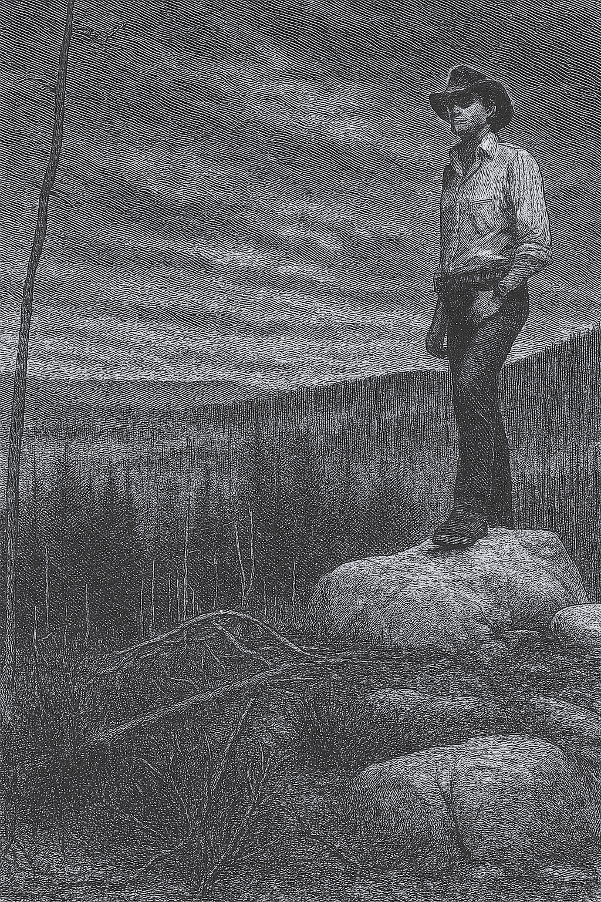
Dehors, les loups hurlaient quelque part au loin. Et le vent leur répondait.
29 mai 2025 — Jour 1
Journal de l'explorateur Gabriel Marie
Le train s’est arrêté à 10h45. J’ai mis pied à terre,sur cette ligne perdue, quelque part entre Tika et le ciel, et sans un mot, le convoi s’est remis en marche. Lentement d’abord, comme s’il hésitait à me laisser là. Puis, de plus en plus vite, il a filé dans les bois, les wagons s’effaçant les uns après les autres, avalés par la forêt.
Je suis resté immobile un instant. Le bruit du moteur s’estompa, puis disparut. Plus rien. Aucun bâtiment. Aucun panneau. Aucune voix humaine. Le silence s’est abattu d’un seul coup, lourd et total. Un silence de neuf jours. Le genre de silence qui n’est pas une absence de sons, mais la présence écrasante de tout ce qui n’est pas nous. Le train avait disparu, et moi, j’étais là. Seul. Seul avec moi même comme unique compagnie.
Je suis parti vers le lac Débord. L’ascension n’est pas longue en soi, mais aujourd’hui, elle m’a paru interminable. Chaque pas réveillait les muscles de mes cuisses, chaque arrêt était une négociation entre la fatigue et la volonté. J’ai dû prendre plusieurs pauses, souvent. Je suais à grosses gouttes. Il n’y avait pas de vent, pas de fraîcheur, pas même une plainte dans les arbres. Le corps cuisait doucement sous la toile du sac.
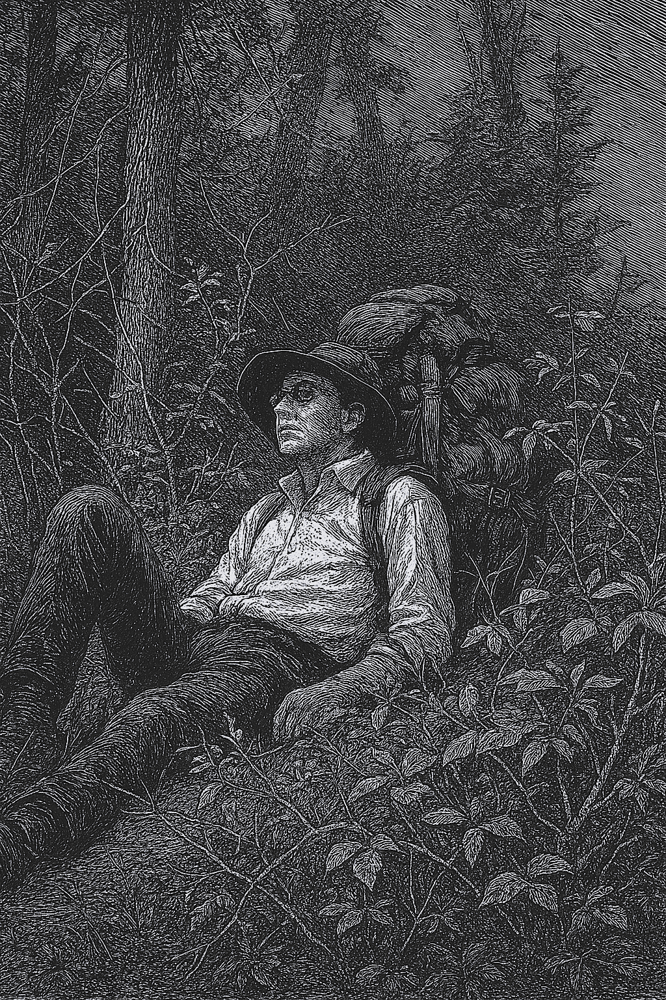
...chaque arrêt était une négociation entre la fatigue et la volonté. J’ai dû prendre plusieurs pauses, souvent.
À un moment, le sentier m’a mené à une rivière. Trois ou quatre mètres de large, le courant gonflé par la fonte des neiges. Les rochers qui servent d’appui, d’ordinaire, étaient invisibles, noyés. Aucun pont. J’ai dû chercher une autre voie. Détour pénible, pieds incertains, poids écrasant sur le dos. Traverser un cours d’eau devient une épreuve quand tout ce qu’on transporte pèse la moitié de soi-même.
Vers 16h30, j’ai atteint le bord du lac. J’ai posé mon sac comme on jette l’ancre. La lumière s’écrasait sur l’eau, blanche et lisse comme un couvercle. Il n’y avait pas un souffle de vent. Pas une ride sur la surface. Pas un moustique. C’était ce détail-là, surtout, qui m’a frappé. Avec cette chaleur, je m’attendais à me faire dévorer — mais non. Aucun nuage d’insectes. Aucune aile. Juste le silence. Comme si la forêt elle-même retenait son souffle.
J’étais à bout. Le sac m’avait vidé. Je tremblais. J’avais chaud comme on a chaud quand le corps dépasse ses limites. Peut-être un début d’hyperthermie. Alors je suis allé au lac. J’ai enlevé mes vêtements, suis entré dans l’eau. Elle était glaciale. Saisie directe. Une gifle de roche liquide. Et pourtant, elle m’a ramené à moi.
Je n’irai pas plus loin demain. C’était prévu — dans ma tête, j’aurais dû déjà pousser jusqu’au lac Nipisso. Mais mon corps a tranché : je resterai ici. Repos. Lecture. Et surtout, alléger le sac. J’ai prévu d’enterrer quelques jours de rations ici. Je les récupèrerai sur le chemin du retour.
Ce soir, j’ai mangé ce que j’avais de plus simple : une conserve de spaghetti, un peu de riz instantané. Ce n’est pas ma nourriture habituelle. Je suis né avec d’autres goûts. Mais là, ce soir, c’était parfait. Chaque bouchée me rappelait pourquoi j’étais là : pour sortir du confort, pour me rappeler ce que c’est que d’avoir faim, d’être fatigué, d’avancer quand même.
Maintenant, la nuit tombe. Il est 21h30. Le soleil disparaît derrière les pins. Les animaux du soir commencent à bouger, à chuchoter dans le sous-bois. Je vais me coucher avec eux. Demain, le jour se lèvera vers 4h30. Je ne sais pas encore ce qu’il apportera. Mais ce soir, malgré la douleur, malgré le doute qui me ronge un peu, je suis content d’être ici. Je suis là où je dois être.
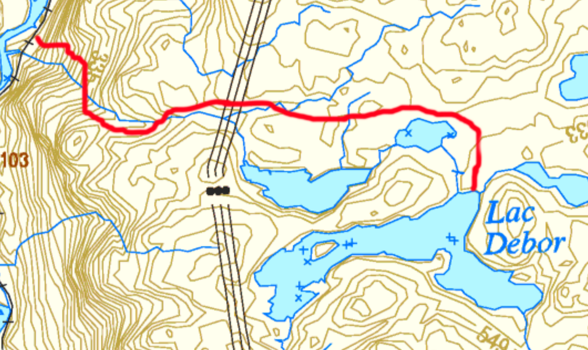
30 mai 2025 — Jour 2 de l’expédition Nipisso Nord
Journal de l'explorateur Gabriel Marie
Je me suis levé à 6h30. Le soleil filtrait à travers la toile de la tente, doux et large. Aujourd’hui, j’étais resté ici pour me reposer. Le corps en avait besoin. Mais comme le ciel était dégagé, j’ai pris le temps d’explorer un peu les environs.
Non loin du campement, dans un lac sans nom — peut-être un bras, peut-être une île de l’archipel du lac Débord — j’ai trouvé un grand rocher dressé au bord de l’eau. Il dépassait d’environ deux mètres cinquante, juste assez pour dominer toute la surface du lac. Sa surface était sèche, rugueuse, recouverte de lichens blanchis au soleil. Je m’y suis installé, le chapeau sur le visage, pour échapper à la lumière. Et je suis resté là longtemps, allongé sans bouger, à ne rien faire d’autre que d’être là.
Le silence n’était pas vide. Il était peuplé. Une nuée de papillons mauves m’a rejoint — une dizaine, peut-être plus. Ils volaient autour de moi sans crainte, se posaient sur mes bras, mes jambes, parfois sur mon visage. Je ne bougeais pas. J’observais, tranquille. Il n’y avait toujours pas de moustiques. C’était étrange, presque irréel.
Le lac était d’un calme absolu. L’eau était si claire qu’on y voyait le reflet net des arbres sur la rive opposée, comme un double monde inversé. Un couple de canards est apparu, nageant à quelques mètres de moi. Ils se sont approchés sans hésitation, curieux mais paisibles. Ici, la peur des hommes n’avait pas encore appris à exister.
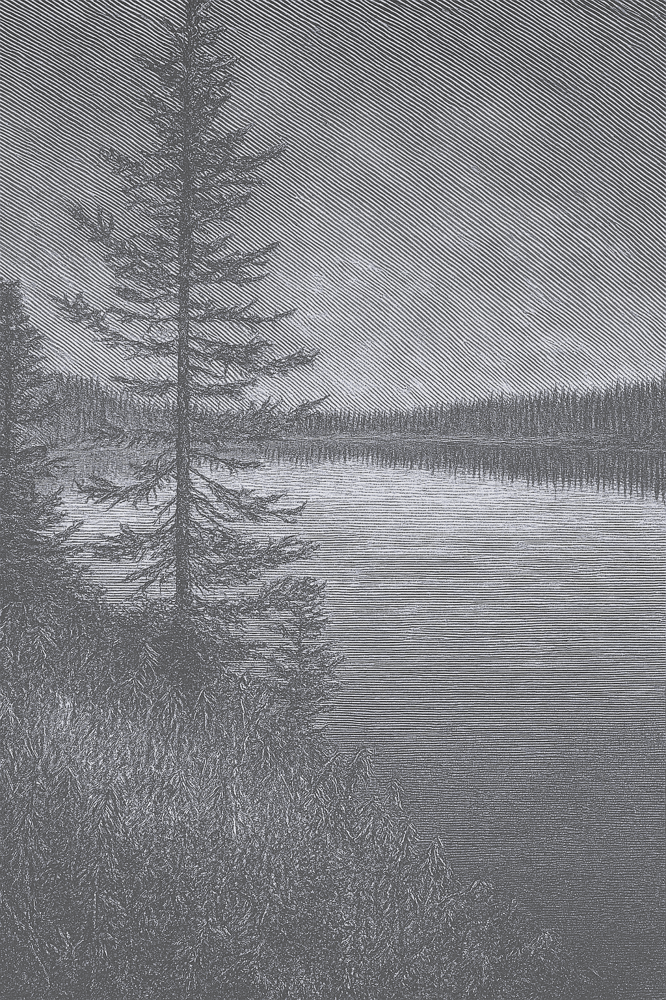
Le lac était d’un calme absolu.
Plus tard, je suis retourné au camp et j’ai commencé à préparer mon sac pour demain. L’expédition reprendra, direction le lac Nipisso. Pendant que je m’affairais, j’ai levé les yeux. Au loin, dans le ciel devenu gris, j’ai vu les éclairs. Des lueurs blanches, silencieuses encore. L’orage arrive. Je sais que demain, il annonce une tempête. J’espère qu’elle sera clémente avec moi.
J’ai aussi lavé mes vêtements du mieux que je pouvais. Une lessive sommaire, mais dans cette solitude, chaque geste simple retrouve du sens.
Enfin, je me suis allongé pour lire. Les Misérables, Hugo. Et puis, à 21h, j’ai fermé les yeux. Le calme du jour m’accompagnait.
Demain, ce sera autre chose.
31 mai 2025 — Jour 3 de l’expédition Nipisso Nord
Journal de l'explorateur Gabriel Marie
Au réveil, il faisait froid. Ce genre de froid qui colle à la peau et fait hésiter. On se dit qu’on pourrait très bien rester là, au chaud dans le sac de couchage, à écouter le vent plutôt que d’aller marcher dans la rosée glacée. Et pourtant, je me suis levé.
Je me suis mis en route vers le lac Nipisso. Sur le chemin, je suis tombé sur un petit lac, long d’un ou deux kilomètres. Et là, posée sur la rive, une vieille barque. Je ne sais pas qui l’a laissée là, mais je lui dois au moins cinq heures de marche en moins. Elle m’a porté sans difficulté, droit vers l’autre rive. Je l’ai quittée avec gratitude.
Un peu plus loin, j’ai réussi à retrouver l’ancien chemin oublié, celui qui relie le lac Débord au lac Nipisso. C’était l’un des objectifs de cette expédition : localiser cette trace disparue, la marquer, la documenter. J’ai pris les coordonnées GPS de plusieurs points le long du parcours. Il y avait là quelque chose de simple et satisfaisant : retrouver une ligne que d’autres avaient laissée derrière eux.
En bordure de ce vieux sentier, j’ai aussi découvert une tanière abandonnée. Trou béant dans la terre, large, creusé sous un repli de roc et de racines. L’entrée portait encore les traces d’une fréquentation animale. Un loup, peut-être. Ou un ours. Mieux valait ne pas trop s’attarder.
En arrivant enfin au lac Nipisso, mon regard s’est posé sur une seconde barque, laissée là elle aussi par d’anciens voyageurs. Celle-ci, cependant, était en mauvais état. Une ouverture circulaire perçait le fond — un trou prévu pour l’évacuation de l’eau — mais le bouchon manquait. On aurait dit qu’il avait été volontairement emporté. Sans lui, impossible de naviguer.
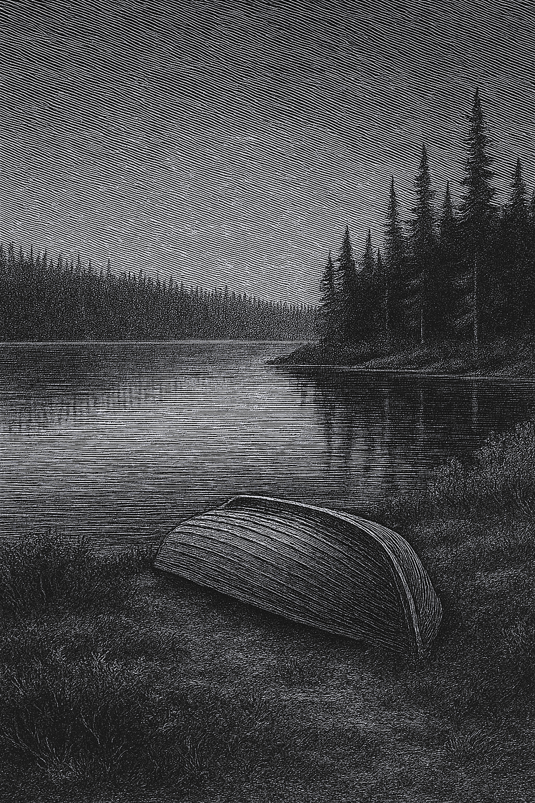
...mon regard s’est posé sur une seconde barque, laissée là elle aussi par d’anciens voyageurs.
J’étais face à un choix : soit bricoler un bouchon de fortune, embarquer dès le lendemain, et traverser le lac en une seule journée, soit renoncer à l’eau et faire le tour à pied — ce qui m’aurait coûté trois ou quatre jours. J’ai choisi le bois. J’ai taillé un bouchon à la main, improvisé mais étanche. J’étais venu préparé : j’avais une bouée dans mon sac, en prévision d’une embarcation éventuelle. Tout indiquait que la suite de mon expédition passerait par le lac.
Une fois la barque inspectée et prête, j’ai monté la tente pour la nuit. Peu après, la pluie a commencé à tomber, fine mais persistante. Le vent s’est levé, et le lac s’est agité. Les rides sur l’eau me parlaient d’un lendemain incertain. Si les conditions ne s’amélioraient pas, je risquais d’être contraint d’attendre un jour de plus avant de prendre le large.
Je suis resté à l’abri. J’ai lu Les Misérables, encore. Le temps passait lentement, à la cadence des pages. Je me suis couché à 21h30, avec l’impression que le jour n’avait tenu qu’à une série d’improvisations réussies.
Détail étrange : mon téléphone indique un peu de réseau. Une ou deux barres, parfois. Suffisantes pour se rappeler que le monde n’est pas si loin — mais trop faibles pour y retourner.
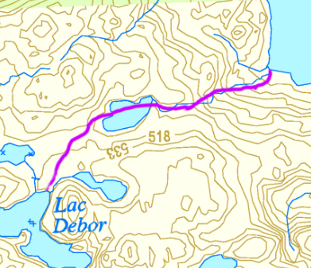
1 juin 2025 — Jour 4 de l’expédition Nipisso Nord
Journal de l'explorateur Gabriel Marie
La tempête annoncée est arrivée.
Le vent s’est mis à souffler dès les premières heures, soulevant des vagues sur le lac et faisant claquer la toile de la tente comme une voile tendue. La pluie est tombée presque sans interruption — fine, oblique, tenace. C’était une journée pour attendre.
Je ne suis pas sorti. Je suis resté couché, puis assis, puis allongé de nouveau. J’ai lu Les Misérables pendant des heures. J’ai écouté la pluie. J’ai regardé le plafond de nylon trembler sous les bourrasques. Rien ne pressait. Il n’y avait nulle part où aller.
Il y a de ces jours où l’on ne fait rien, sinon apprendre. Apprendre à apprivoiser le temps, à l’accepter pour ce qu’il est : lent, irrégulier, souvent silencieux. Apprendre à dompter la patience, à se rendre disponible à l’attente sans la fuir. Ne pas lutter contre l’ennui, mais l’accueillir.
Aujourd’hui, je n’ai pas avancé. Et pourtant, j’ai cheminé.
2 juin 2025 — Jour 5 de l’expédition Nipisso Nord
Journal de l'explorateur Gabriel Marie
Ce matin, il faisait froid — autour de 9 °C — mais le lac était calme, l’eau dormait sous un ciel encore hésitant. J’ai saisi l’occasion. J’ai pris la barque et j’ai mis le cap vers le nord.
Au départ, tout allait bien. L’embarcation glissait sur l’eau, et le paysage se déroulait lentement, comme un long film muet. Puis le vent s’est levé, presque sans prévenir. Il a suffi d’un quart d’heure pour que le lac change de visage. L’eau s’est agitée, la barque a commencé à tanguer. J’étais trempé. Le froid, combiné à l’humidité, devenait préoccupant.
J’ai décidé d’atteindre la rive au plus vite. Je suis allé vers une plage dégagée, mais ce fut une erreur. C’était un brûlé — un ancien territoire ravagé par le feu. Plus un seul arbre. Le vent y hurlait sans résistance, sec et glacé. J’avais été attiré par une formation géologique, mais je n’avais pas réfléchi à l’exposition du lieu. Reprendre la barque n’était plus une option.
Je me suis enfoncé à pied dans la terre noire jusqu’à atteindre une petite forêt intacte, un îlot de verdure au milieu de la cendre. Là, la température était plus douce — facilement 15 °C. J’ai planté ma tente, mis mes affaires à sécher, et consulté la météo sur mon téléphone satellite. Des rafales importantes étaient prévues pour le reste de la journée. La décision était simple : je resterai ici. Il fallait attendre.
Il y a beaucoup d’attente dans ce genre d’expédition, mais elle a du sens. Ma vie est en jeu. Et ce qu’on oublie dans le confort d’un salon, c’est qu’ici, dans le silence du bois, une mauvaise décision peut tout faire basculer. Si j’étais reparti sur l’eau, trempé comme j’étais, j’aurais pu tomber en hypothermie. Ou bien chavirer. Si la barque coule, je perds tout : équipement, provisions, moyen de retour.
J’ai prévu ce genre de scénario. Mon GPS est toujours accroché à ma bouée de sauvetage. Même sans sac, je peux appeler à l’aide. Et dans le pire des cas, je peux toujours traverser la forêt à pied et rejoindre la voie ferrée. J’y ai laissé des rations au jour 1. Mais malgré tout, c’est dangereux. Et c’est pour ça qu’il faut parfois simplement attendre. Comme dit le vieux proverbe : la patience est mère de sûreté.
L’après-midi, je suis allé me promener un peu dans le brûlé. J’y ai trouvé les vestiges d’un ancien camp : au moins cinq cabanes, calcinées, éventrées par le feu. Des barques fondues, des lits effondrés, des matelas en spirale de métal rouillé, des vitres fondues, de la laine isolante fondue sur les pierres. Tout cela recouvert d’un voile léger de mousse, comme si la nature avait commencé à panser les plaies.
J’ai souvent vu ça dans mes expéditions. Des camps abandonnés, laissés dans un état lamentable. Les propriétaires construisent un nouveau chalet un peu plus loin, et laissent les débris là, comme si le bois pouvait les avaler. J’ai vu des frigos jetés en bas de falaises, des déchets brûlés à l’essence, formant des plaques de plastique fondu mêlé de métal que personne ne vient chercher. D’autres fois, ce sont des bidons d’huile ou de gaz laissés à traîner. Et évidemment, ça finit par fuir. Un ours mort dedans, l’huile coule, et ça rejoint le lac. Parfois, la surface de l’eau est couverte d’un arc-en-ciel toxique.
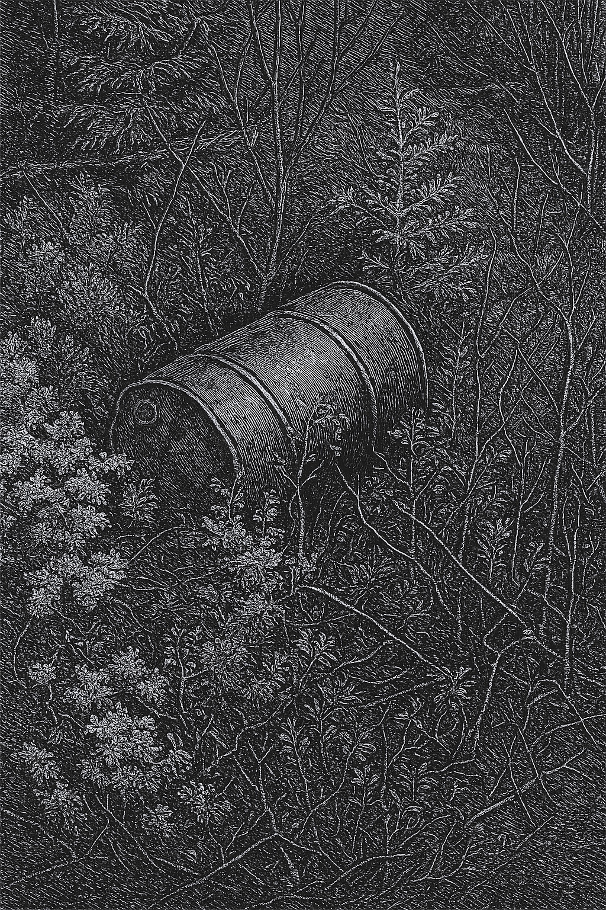
...ce sont des bidons d’huile ou de gaz laissés à traîner.
On devrait avoir des amendes pour ça. Le territoire mérite mieux. Venir ici, c’est un privilège. On ne devrait pas pouvoir salir ce qu’on prétend aimer.
Le reste de la journée s’est écoulé tranquillement. J’ai lu, comme d’habitude, et pris des photos.
L’une d’elles me touche particulièrement. Deux pierres, restées l’une contre l’autre par simple friction, probablement depuis la dernière glaciation. Peut-être quarante mille ans ainsi, serrées, figées. On aurait dit un couple. Elles avaient été sculptées par le temps pour s’emboîter. J’ai eu l’étrange privilège de les séparer. Juste un instant. Pour voir dessous. Puis, sans tarder, je les ai remises ensemble. Pas par superstition. Par respect. Disons que je les ai séparées pour qu’elles se souviennent, mieux encore, du bonheur d’être réunies.
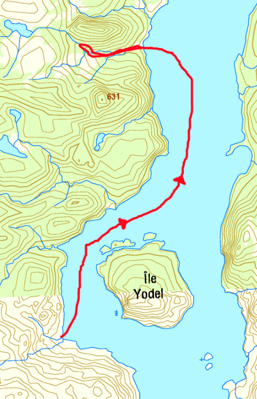
3 juin 2025 — Jour 6 de l’expédition Nipisso Nord
Journal de l'explorateur Gabriel Marie
L’eau était lisse ce matin, comme si le lac voulait me donner une chance. Je me suis levé très tôt, et j’ai repris la barque.
Mais à peine dix minutes après avoir quitté la rive, une des deux rames s’est brisée dans mes mains. Cassée net. Une barque avec une seule rame, c’est comme une mouche à une aile : ça tourne en rond.
J’étais encore près du rivage, mais très loin de ma destination. Techniquement, je pouvais faire demi-tour. La mer était belle, le vent calme, et avec un peu d’effort, je pouvais rentrer. Mais ce retour, c’était aussi abandonner. Annuler l’expédition. Rejeter six jours d’efforts, des mois de préparation, et cette idée folle que j’étais venu au bout du monde pour accomplir quelque chose. J’étais à deux doigts de tout laisser tomber.
Je pesais mes options. Revenir à pied était impossible. La seule manière de rentrer, c’était par l’eau. Il restait bien une méthode : ramer deux coups d’un côté, déplacer la rame, recommencer de l’autre — lentement, péniblement. Ce qui m’aurait pris cinq heures prendrait deux jours. Et si le vent se levait, j’étais à la merci des vagues.
Il fallait agir vite. Alors je me suis souvenu du brûlé d’hier. Il y avait là un tas de métal rouillé, des débris de cabanes et d’objets calcinés. Peut-être que là-bas, je pourrais bricoler quelque chose.
Je suis revenu au point de départ, presque soulagé que la rame se soit brisée par beau temps, près de la rive.
J’ai couru vers les décombres, fouillé parmi les carcasses de chaloupes et de matelas tordus. J’ai trouvé une longue tige de métal, droite et solide. Je l’ai fixée contre le morceau brisé de la rame, enroulée de duct tape — celui que je garde toujours sur moi pour réparer la tente ou mes vêtements. Au bout d’un moment, la rame tenait. Solide. Prête. J’avais retrouvé l’espoir.
Avant de repartir, j’ai pris une seconde barre de métal et je l’ai embarquée avec moi, au cas où la deuxième rame déciderait, elle aussi, de me lâcher.
Et je suis reparti.
Une heure plus tard, j’apercevais enfin l’extrémité nord du lac Nipisso. Une grande plage de sable clair, parsemée de troncs blanchis et dénudés, échoués en tas. J’ai accosté, tiré la barque sur la berge. Dans le sable, des empreintes fraîches : loup, orignal. Elles dataient de la nuit.
J’ai pris mon GPS, mon appareil photo, ma gourde. Et j’ai marché.
Je suivais les traces, de fins sentiers battus par les animaux. Parfois, je me heurtais à des murs de troncs couchés, témoins d’un ancien brûlé. On devait escalader, contourner, ramper.
Étrangement, certaines parcelles avaient été épargnées par les flammes. Petits îlots de forêt vivante, suspendus au milieu du désert noir. Pourquoi celles-là ? Le feu avait-il contourné ? Ou la pluie avait-elle choisi son camp ?
Et puis, soudain, le paysage s’est ouvert. Plus d’arbres, remplacé par une steppe de sable et de blocs erratiques. J’étais arrivé. C’était pour cet endroit que j’étais venu. J’avais suivi les traces d’un ancien cratère, un possible impact de météorite, et ce désert pierreux en portait les signes.
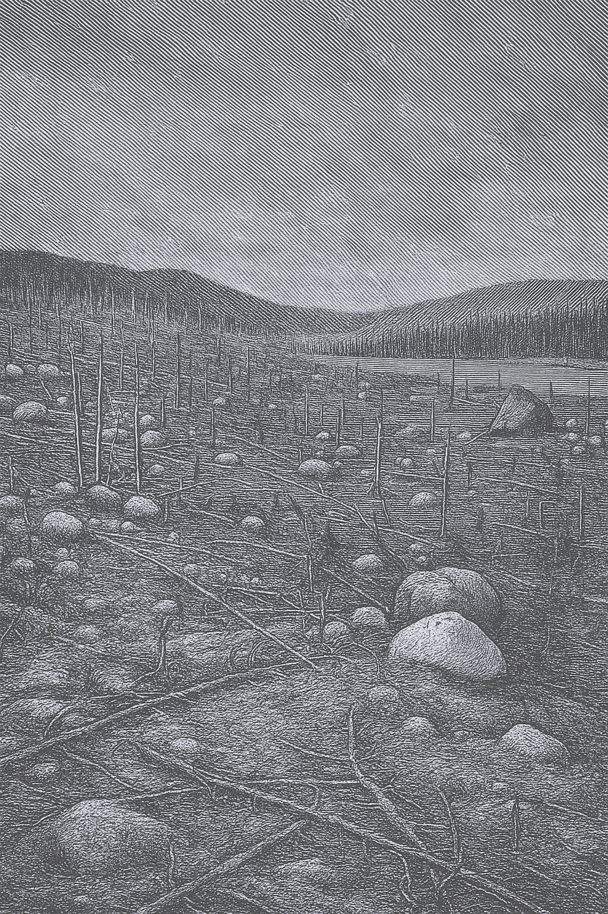
Plus d’arbres, remplacé par une steppe de sable et de blocs erratiques.
Je me suis approché d’une dune. Presque toutes les pierres étaient fracturées, éclatées en morceaux. Certaines semblaient avoir fondu. Une, grosse comme moi, avait la texture du verre, du sable vitrifié, figé dans le sol. Le tout formait une sorte de paysage lunaire, ou post-apocalyptique.
Plus loin, un petit lac inconnu, alimenté par un autre plus grand situé à 500 mètres à l’est. Entre les deux, un canal si droit qu’on aurait cru un ouvrage humain. Il y avait un barrage de castors, et une hutte. Le barrage formait une passerelle naturelle — ou presque.
J’ai traversé à l’aide d’un long tronc calciné, tombé là. Mais à la seconde section, le barrage s’était effondré. Le courant était fort. Alors, j’ai pris mon élan, planté le tronc dans le lit de la rivière et sauté, comme à la perche. L’atterrissage fut rude, mais efficace.
J’ai continué l’ascension dans le sable et les roches. Ce nouveau secteur n’était fait que de pierres roses, uniformes, intactes. Cela contrastait fortement avec le chaos géologique précédent. Peut-être y avait-il eu là une onde de choc, une zone d’impact, une différence de température… Je ne sais pas. Mais j’ai pris beaucoup de photos.
Je me suis promené longtemps. J’ai trouvé un petit lac en forme de cœur. Et soudain, au détour d’un talus, deux orignaux. Immenses, majestueux. Je me suis figé. Le premier m’a vu, a reculé, puis s’est arrêté. L’autre, curieux, ne comprenait pas. Le premier a secoué la tête dans ma direction, comme pour lui dire : « Regarde. » Le second m’a aperçu, je me suis levé, et tous deux ont détalé. En quelques secondes, ils avaient disparu au loin. Un kilomètre parcouru là où il m’aurait fallu une heure.
C’était une vision rare. Une vraie récompense.
Le soleil commençait à décliner. Il fallait revenir.
En chemin, j’ai croisé un harfang des neiges, perché, seul. Il me regardait. Serein.
Mais déjà le vent se levait. Le ciel se fermait. La forêt, jusque-là paisible, s’agitait comme un seul corps. Les oiseaux fuyaient bas, nerveux. Je sentais une urgence muette monter dans l’air.
Une heure d’effort pour rejoindre ma barque. Une heure à grimper, contourner, ramper, me heurter aux branches mortes. Quand je suis arrivé, le lac n’était plus que chaos. Des vagues épaisses, puissantes, frappaient la rive avec une lenteur obstinée.
J’ai consulté la météo. Vent de 4 m/s maintenant, mais jusqu’à 12 m/s dans les prochaines heures et pour plusieurs jours. Une seule accalmie : demain, entre 4 h et 6 h du matin. Deux heures. Et c’est tout.
Mais j’étais épuisé, grelottant. Une rame bricolée. Et le vent de face.
Je me suis assis sur un tronc pourri, le visage dans les mains. Et je me suis dit tout haut : « Qu’est-ce que je vais faire ? »
Puis j’ai levé les yeux vers le lac en furie.
Je n’avais pas le choix. C’était ça, l’expédition.
J’ai lancé la barque à l’eau, sauté dedans, et commencé à ramer.
Quand on affronte les vagues, il faut les prendre de face. Si le bateau se retrouve parallèle à leur crête, il devient presque impossible de le redresser. Les vagues frappent alors sur le flanc, ralentissent tout et risquent de faire chavirer. Il faut constamment corriger, ramer sans cesse pour garder le cap, rester perpendiculaire.
Mais soudain — un choc. Le fond de la barque avait heurté quelque chose. J’étais sur un haut-fond. Quatre rochers, invisibles à distance, affleurant juste sous la surface. Le courant me poussait, et les vagues m’arrivaient de côté.
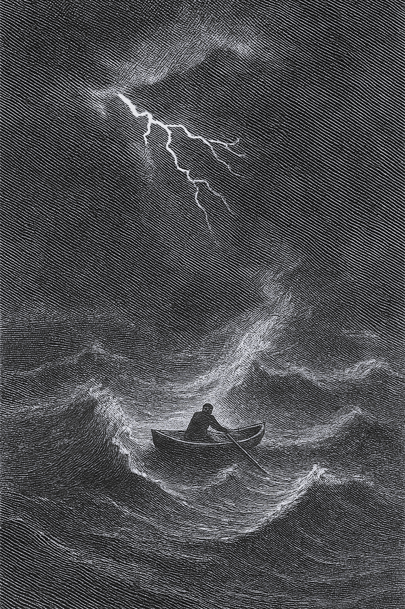
Le courant me poussait, et les vagues m’arrivaient de côté.
Elles me frappaient à angle droit. Elles tentaient de me faire chavirer, tout en poussant la barque contre les rochers. Je sentais la coque frotter, râper. Le bateau se déportait malgré mes efforts. Il s’était mis en travers. Et j’étais coincé.
Allongé au fond, le corps tendu pour garder l’équilibre, j’ai agrippé la rame. Je l’ai calée contre un rocher et j’ai poussé. De toutes mes forces. Le bateau a tremblé. J’ai poussé encore. Et, dans un grand craquement mou, il s’est détaché.
Un miracle : j’ai réussi à me dégager.
Pas une seconde à perdre. J’ai remis les rames dans les dames de nage. Repris le rythme. Les vagues étaient toujours là. Mais les pierres, elles, étaient derrière moi.
Le soleil se couchait derrière les montagnes. La lumière s’éteignait.
Trois heures plus tard, j’étais revenu à mon point de départ. Épuisé.
Il faisait froid. Le vent soufflait. Alors j’ai retourné la barque sur la rive pour m’en faire un abri, ai monté ma tente dessous, et je me suis couché.
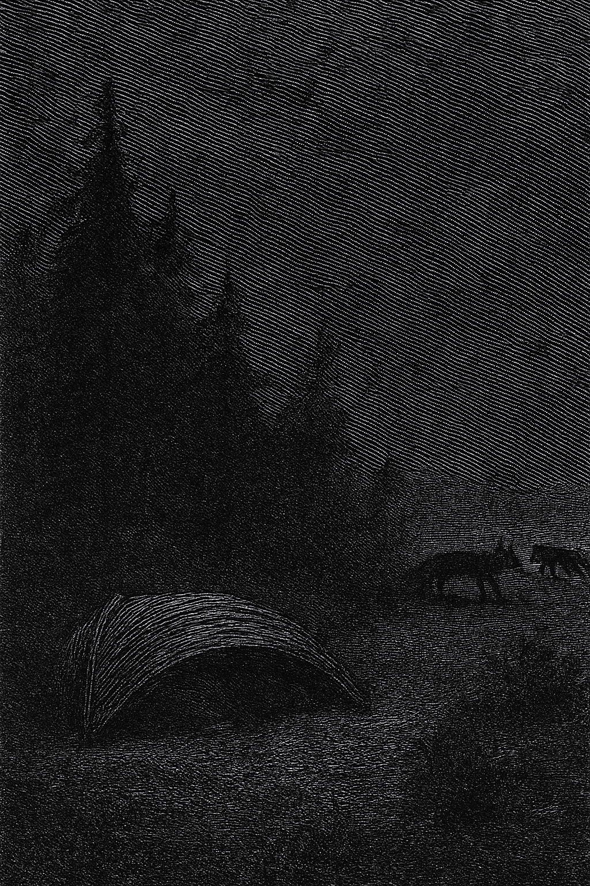
Alors j’ai retourné la barque sur la rive pour m’en faire un abri...
Demain, à 4 h, il faudra repartir. Et ramer. Encore.
Dehors, les loups hurlaient quelque part au loin. Et le vent leur répondait.
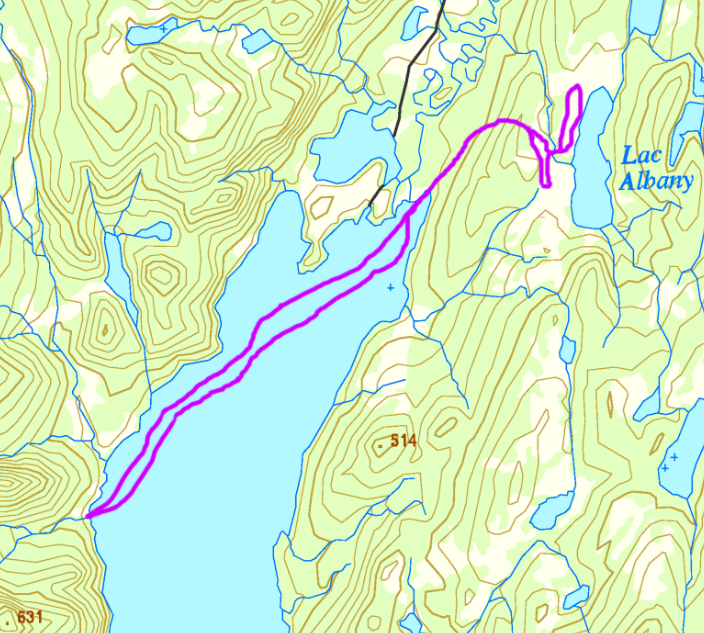
4 juin 2025 — Jour 7 de l’expédition Nipisso Nord
Journal de l'explorateur Gabriel Marie
Au réveil, j’ai tout de suite senti qu’il n’y avait pas un souffle de vent. Le silence était net, l’air complètement immobile. J’ai jeté un œil hors de la tente.
Le lac était de miroir.
Lisse, étale, presque irréel. Une mer d’huile. Mieux encore que ce qu’annonçait la météo. J’ai refermé ma tente sans perdre une seconde, rassemblé mes affaires à la hâte, et mis la barque à l’eau.
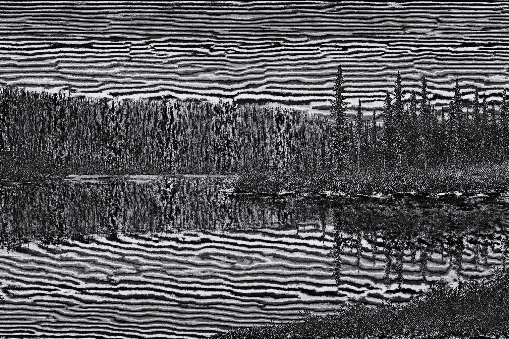
Le lac était de miroir. Lisse, étale, presque irréel. Une mer d’huile.
En trois heures, j’avais traversé le reste du lac. Le calme m’avait offert une fenêtre inattendue. Chaque coup de rame glissait sans résistance. Je sentais encore la fatigue de la veille dans mes bras, mais l’eau coopérait. Tout allait.
En fin de matinée, j’étais revenu a l’entrée du lac Nipisso. Là où j’étais trois jours plus tôt. J’avais réussi. Il ne me restait plus qu’à me reposer.
Le vent s’est levé vers midi. Une tempête a éclaté. Les arbres craquaient, la pluie tombait par rafales. Mais moi, j’étais déjà à l’abri. Dans ma tente, le dos contre mon sac, j’ai repris Les Misérables.
Il faut parfois peu de choses pour transformer une journée : un réveil sans vent, un lac tranquille, et un livre dans le calme retrouvé.
5 juin 2025 — Jour 8 de l’expédition Nipisso Nord
Journal de l'explorateur Gabriel Marie
Aujourd’hui, je suis revenu au lac Débord.
Le sentier m’a ramené sur mes pas, tranquillement. Le vent soufflait doucement, sans hâte. Je connaissais maintenant les pierres, les virages, les odeurs. Le territoire n’était plus inconnu. Il s’était laissé apprivoiser, un peu.
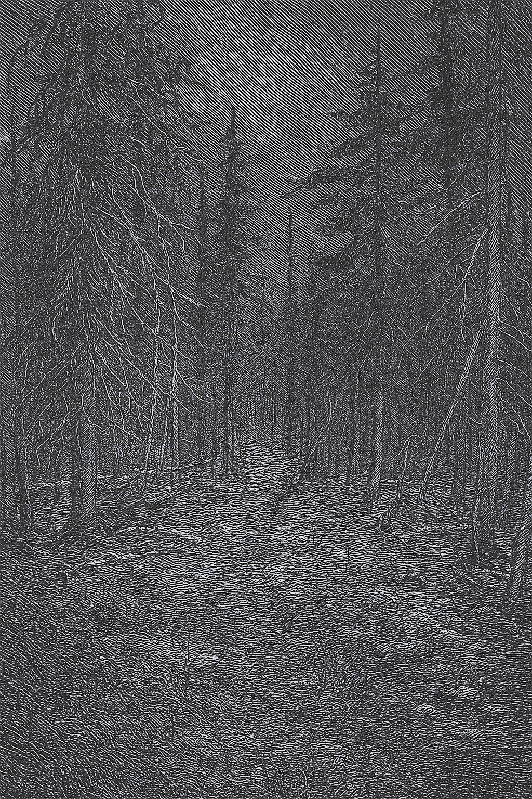
Le sentier m’a ramené sur mes pas, tranquillement.
Mon sac était plus léger. Mon corps, lui, portait les traces de l’effort, mais aussi une certaine fierté. Cette expédition avait été une vraie réussite. Difficile, parfois. Mais pleine. Et, il faut le dire, je m’étais bien amusé. Il y avait eu de la fatigue, du froid, de l’attente… mais surtout du sens. Et ce soir, au bord de ce même lac où tout avait commencé, je pouvais enfin souffler.
J’ai aussi terminé Les Misérables.
Et la fin m’a profondément marqué.
C’est la vie entière de Jean Valjean qu’on traverse. On le connaît jeune, condamné aux bagnes pour avoir volé un simple morceau de pain. On le voit changer, lutter, aimer, se battre contre lui-même, contre les lois, contre l’injustice. Et à la fin, on le retrouve seul, fatigué, à l’ombre, dans l’attente d’un dernier regard de Cosette.
Pour lui aussi, c’était la fin d’une histoire.
Il s’exprimait : « Mourir n’est rien, ne pas vivre est atroce. » Dans cette expédition, j’ai vécu.
6 juin 2025 — Jour 9 de l’expédition Nipisso Nord
Journal de l'explorateur Gabriel Marie
Aujourd’hui, j’ai quitté le territoire.
Je suis revenu à Tika, au 56e mille, 9e pôle. Le même point de départ. Le même quai, perdu dans les épinettes. À 19 h 30, le train s’est arrêté doucement, presque comme s’il s’excusait. J’y suis monté, le corps encore chargé de fatigue, mais l’esprit un peu ailleurs.
Dans le train, en discutant, j’ai appris qu’un ami — ou plutôt, l’ami d’un ami dont je tairai le nom — possédait un camp au lac Nipisso. Il y va parfois en hydravion. En entendant ça, j’ai eu une pensée un peu amère : peut-être qu’il m’aurait laissé embarquer avec lui. Peut-être que tout ce périple, toute cette marche, toute cette rame, tout ce poids… aurait pu être évité.
Mais presque aussitôt, un autre souvenir m’est revenu. Un livre que j’avais lu il y a quelque temps : L’Alchimiste.
À la fin, le berger découvre que le trésor qu’il cherchait, celui pour lequel il avait traversé tout le désert jusqu’aux pyramides, était en réalité enterré à l’endroit exact d’où il était parti, au pied d’un arbre en Andalousie.
Alors il demande à l’alchimiste : « Pourquoi m’avoir fait faire tout ce voyage ? »
Et l’alchimiste répond : « Les pyramides… Elles étaient belles, non ? »
Dans ma tête, je me suis répondu à moi-même : « C’est vrai... Elle était belle, la nature. »
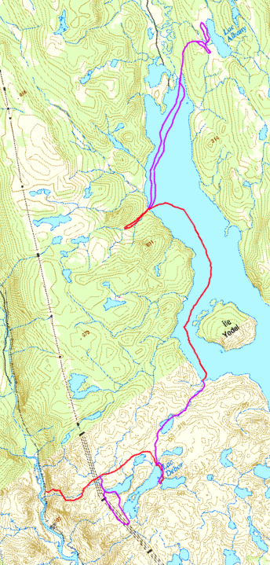
Intégral du trajet parcouru pendant l'expédition Nipisso Noth
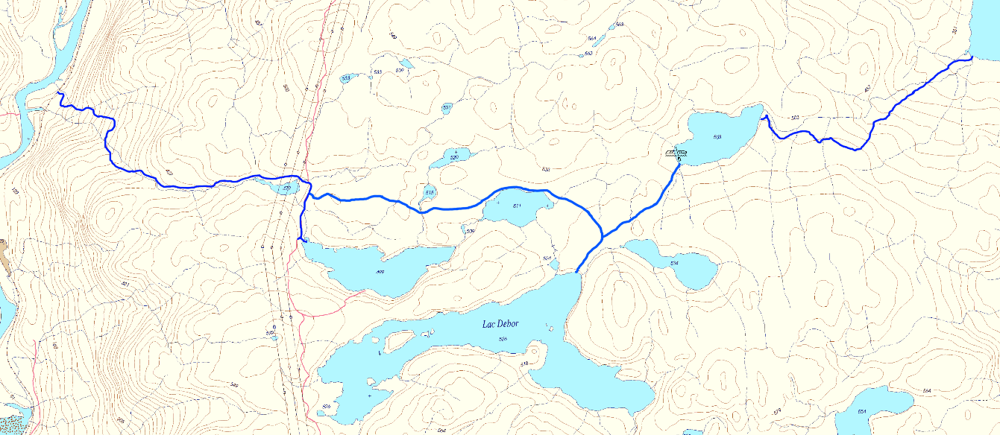
Le sentier m'a ramené sur mes pas, tranquillement.